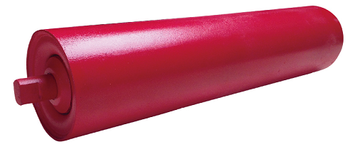

1.辊皮（钢管）
我们使用托辊专用管，相对于普通钢管，在以下方面有很大优势。
*外径公差
*壁厚公差
*弯曲度
*椭圆度
*内毛刺的高度
2.轴
我们使用冷拔钢，亮度高，公差小。
3.轴承
1)C3，C4大游隙深沟球轴承，使托辊转动灵活。
2)带铁封和胶封轴承，有效防尘。
3)材质：轴承钢
4）轴承6204/6205/6206/6305/6306/6307/6308/6309/6310
4.轴承座和密封
1）DTII, TD75, TK 迷宫式密封
2）轴承座：拉伸强度高，高硬度，韧性好，容易焊接不易裂。
3）密封材质：ABS树脂， 尼龙， HDPE， 聚氨酯 等。